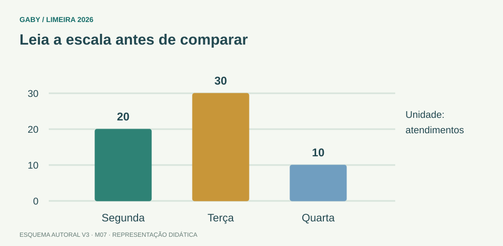

Objetivos do módulo
- Extrair valores de tabelas e gráficos.
- Comparar variações absolutas e percentuais.
- Evitar conclusões não sustentadas pela escala ou pelos dados.
Leia a escala antes de comparar

Descrição em texto do esquema
- Segunda: 20 atendimentos
- Terça: 30 atendimentos
- Quarta: 10 atendimentos
Oficina visual · aplique o esquema
No gráfico, qual é o total dos três dias e qual a participação da terça-feira?
Atividade autoral complementar da V3. Registre sua resposta; a resolução está no arquivo de gabarito e revisão.
Mapa do conteúdo
1. Leia título, unidade e fonte
Antes de calcular, identifique o que está sendo medido, em que unidade e qual período. Muitos erros vêm de misturar milhares com unidades ou percentuais com valores absolutos.
2. Variação absoluta x percentual
Variação absoluta=final−inicial. Variação percentual=(final−inicial)/inicial×100%. Uma grande variação absoluta pode representar pequeno percentual quando a base é grande.
3. Escalas de eixos
Gráficos com eixo vertical truncado podem amplificar visualmente diferenças. Em prova, use valores e escala, não a impressão visual.
4. Tabelas de dupla entrada
Cruze corretamente linha e coluna. Quando houver total, confira somas e percentuais para detectar inconsistências.
Exemplos resolvidos passo a passo
Exemplo 1
Situação: Atendimentos: janeiro 200, fevereiro 250. Variação?
Exemplo 2
Situação: Gráfico inicia eixo y em 95 e barras 98 e 100.
Pegadinhas e erros frequentes
- Ignorar unidade.
- Calcular percentual sobre o valor final.
- Concluir tendência com poucos pontos sem apoio.
- Confiar no tamanho visual sem ler eixo.
Resumo de prova
- Leia título, legenda, eixos, unidade e período.
- Percentual usa valor inicial como base.
- Eixo truncado pode distorcer percepção.
Exercícios do módulo
Resolva sem consultar o arquivo de gabarito. As questões são autorais e construídas para treinar os conceitos do edital.
- 180
- 1,25
- 20
- 25%
- 125%
- 20%
- 25%
- 80%
- ver título/eixos/unidades
- somar barras aleatoriamente
- ignorar legenda
- assumir eixo começando em zero
- mudar os dados reais
- eliminar legenda
- impedir qualquer leitura
- amplificar visualmente diferenças
- 5%
- 80%
- 20%
- 40%
- 25%
- 10 unidades
- 20%
- ambas A e B
- cruzando linha e coluna
- apenas na última linha
- somando títulos
- pela cor
- substituir dados
- mudar escala
- calcular média
- explicar categorias/séries
- 1.200
- 120
- 12.000
- 12
- supor causas não mostradas
- ser sustentada pelos dados
- ignorar período
- usar impressão visual apenas
Quando terminar, abra Matemática 07 - Tabelas e Gráficos - Gabarito e Revisão.
Checklist de domínio
- ☐ Extrair valores de tabelas e gráficos.
- ☐ Comparar variações absolutas e percentuais.
- ☐ Evitar conclusões não sustentadas pela escala ou pelos dados.
Meta do módulo: 80% ou mais nas questões, sem depender de consulta.
Referências e conteúdos auxiliares
- IMPA/OBMEP — Portal da Matemática, módulosVideoaulas, exercícios e materiais por tema. Localize o assunto indicado no roteiro complementar do módulo.
Referências externas de apoio consultadas para a V3 em 27/09/2026. A origem das questões é o material autoral do projeto; estes links não indicam que uma instituição publicou ou validou os exercícios. As páginas externas precisam de internet. Em informática, confira a versão do programa; em legislação, observe o recorte e as regras de atualização do edital.